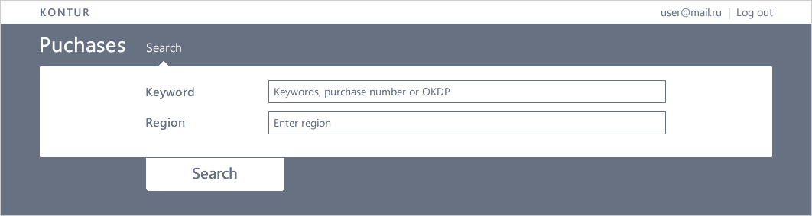
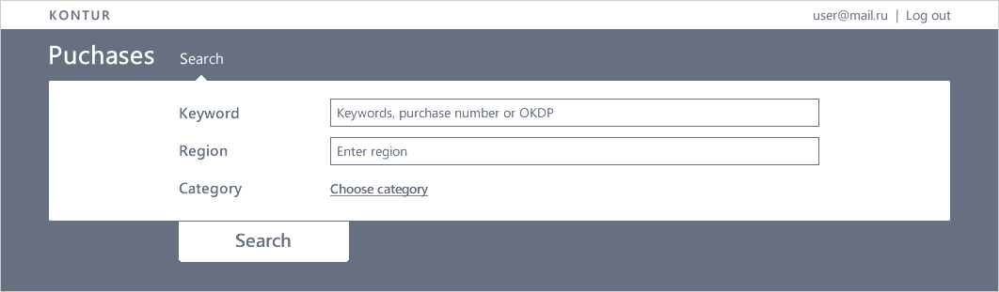
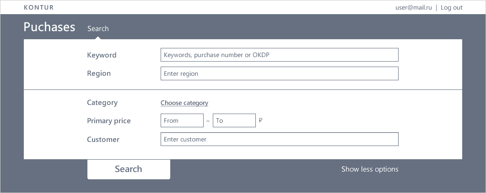
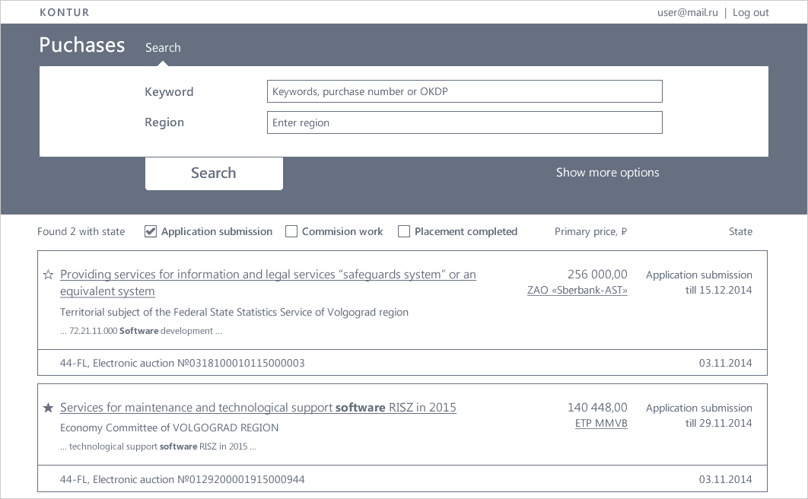
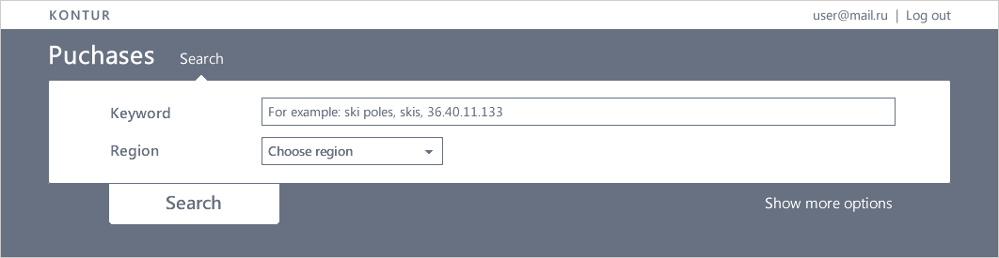
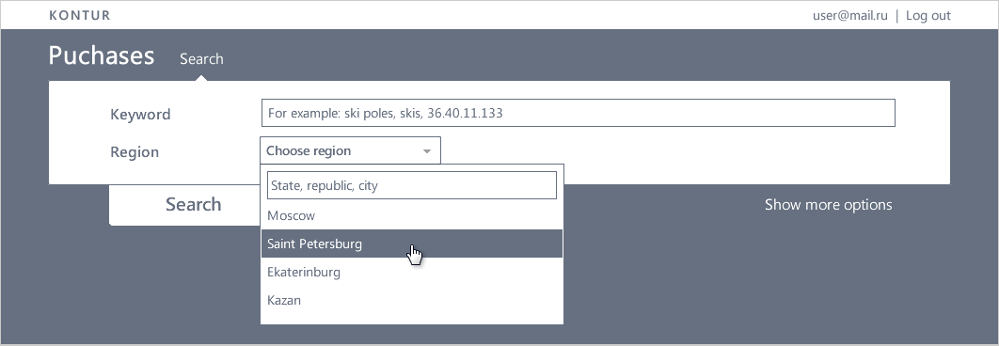
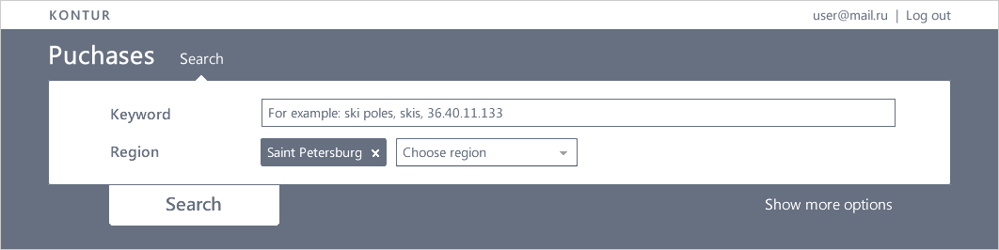
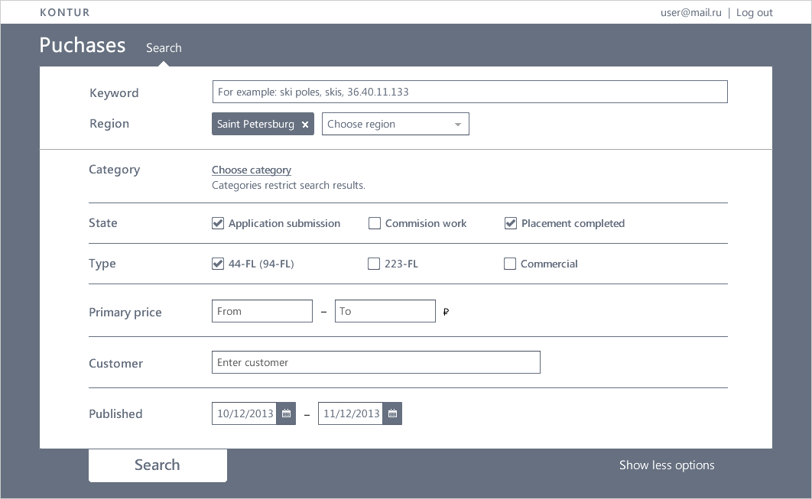

Search form's lifetime
Based on personas, the first step for users in our app is searching for purchases. In the early beginning of designing a search form, we were eager to make the form with a minimum amount of fields. By series of usability testings and surveys, we revealed the key scenario. It included only two fields and some default settings for all users. That was our first search form, and it really worked.
After a while, we started to receive messages from our users asking to add this or that field. We resisted as we could because we didn’t want the form to become a monster. But the form was slowly growing anyway.
In our defense, every change we made was proved that it’s necessary. We watched users search requests, we accumulated users with the same feedback, we listened to sellers why users refused to buy, we explored and tested our competitors.
Lifetime


We added "Category" to help search through the whole economic field. It can be used in a conjunction with keywords to narrow search results as well.


Customer and price
Less frequent scenarios we found were searching for exact customer and filtering by price.
Moving categories
We calculated that usage of categories was far less than usage of keywords, so that categories were moved to "Show more options".
Status
We added archive purchases to a search, and placed a purchase status as a filter above results.
We made two fields in a stylish way that didn't work.



We changed it back. The problem was that users were confused by one line instead of two text inputs. They thought that it was a label under the line and wrote everything in one field below.
But it can't be one field, because searching by unstructured request worsen search results quality. Besides, our users have strict parameters of what they want, and it's better to give them two fields than to teach how to request.

Status was moved
Status was moved to "Show more options" as not concerned with the main scenario.
Type
Users appeared to be divided into several groups by participating in only one type of purchases.
Publish date
User wanted to search for old purchases to analyse.
Usability testings revealed the key scenario: user knows where and what he wants to sell.